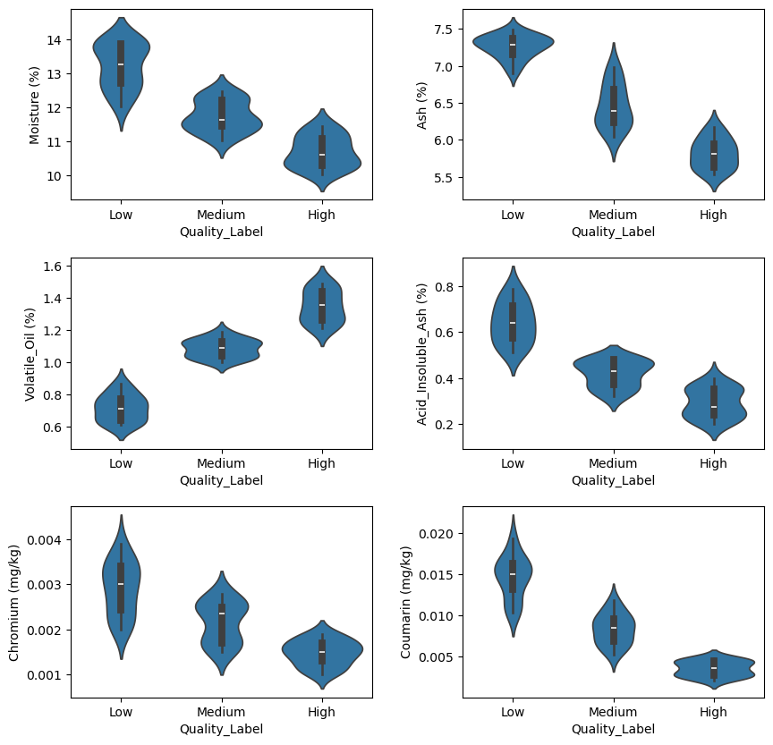

This dataset contains analytical results for 60 cinnamon samples. Each sample is defined by a unique Sample_ID and characterized by six explanatory features: Moisture, Ash, Volatile_Oil, Acid_Insoluble_Ash, Chromium, and Coumarin. The goal of the analysis is to predict or explain the Quality_Label, which is the target feature. The dataset is complete and free of duplicates.
The Quality_Label feature has three levels: Low, Medium and High. The dataset is perfectly balanced, with each class containing exactly 20 samples.
Sample distribution analysis for the explanatory features is done, see Figure 1.
Figure 1: Density plots for each explanatory feature, showing the distribution of all samples (black line) overlaid with distributions colored by Quality_Label (Low, Medium, High).
The correlations between most features are strong (above 0.80) as shown in Figure 1. Chromium is the exception, showing the lowest correlations, suggesting it may contain different information about the target.
Figure 2: Pearson correlations coeficients between the explanatory features.
The relationship between explanatory features and target is also analyzed using violin plots (Figure 3) and ANOVA tests (Figure 4). Through the F-test values, we can assess the potencial of variables for classification.
Code
# Violin plot each feature (+ boxplot)plt.figure(figsize=(10, 10)) # Dynamic figure sizeplt.subplots_adjust(wspace =0.3, hspace =0.3)for i, feature inenumerate(features,start=1): plt.subplot(3, 2, i) sns.violinplot(x ="Quality_Label", y = feature, data = df, inner ="box", order=['Low', 'Medium', 'High'])plt.show()

Figure 3: Violin plots showing distribution of each explanatory feature, stratified by Quality_Label categories
Figure 4: F-statistics from ANOVA tests assessing the relationship between each explanatory feature and the target variable.
As shown by its dominant F-statistic in Figure 4, the Volatile Oil feature possesses the highest classification potential. This is strongly supported by the clear separation of its density distributions across quality levels in Figure 1 and its behavior in Figure 3. The features Ash and Coumarin also demonstrate significant predictive power, ranking as the next most important features. In contrast, Chromium is the least effective classifier, a conclusion drawn from its low F-statistic and the extensive overlap of its distributions across all quality labels.
Feature selection
At this stage, given that we have several variables with high predictive power, building a 100% accurate model using all of them would be straightforward. The real challenge lies in determining how far we can push feature selection to develop the simplest possible model using the fewest variables. This approach would be particularly attractive for companies looking to reduce costs in their analytical processes—fewer variables for classification would automatically mean fewer required analyses, leading to immediate cost reductions. We define our objective here as finding the simplest possible model capable of classifying samples with 100% accuracy.
Volatile Oil feature as discriminant
As can be seen in the following plot, based on the available data, Volatile Oil could serve as a discriminant feature for sample classification. This parameter enables the definition of two discriminatory thresholds for flawless sample classification. The low-quality threshold would correspond to the average of maximum value observed in the low-quality group and the minimum value from the intermediate-quality group. Samples falling below this cutoff would be categorically classified as low quality. Analogously, a second threshold could be derived to differentiate high-quality and intermediate-quality specimens.
Figure 5: Plot for Volatile Oil and Ash features. Thresholds for classification are shown (red lines)
The model demonstrates high reliability in identifying low-quality samples, which are clearly distinct from the others (Figure 5). However, the differentiation between medium and high-quality samples is less distinct, suggesting lower classification confidence for these groups.
To test the robustness of this model, a bootstraping strategy is applied and 1000 train/test datasets will be generated. The model’s predictive performance will be evaluated on these different datasets using accuracy, precision and recall.
Precision Low 1.000000
Precision Medium 0.977086
Precision High 0.986053
Recall Low 1.000000
Recall Medium 0.987066
Recall High 0.976602
Accuracy 0.986723
dtype: float64
The model demonstrates excellent performance across all three classification levels (Low, Medium, High). Precision and recall for Low are perfect (1.0), while Medium and High show near-perfect scores. Overall accuracy is 98.7%, indicating highly reliable predictions with minimal errors. The balanced results suggest strong generalization across all classes.
Logistic regression for selected features
As previously noted, the available data makes it straightforward to achieve a model with 100% accuracy. The real challenge now is to develop the simplest possible model using the minimal set of features. Given these premises—and considering the previous model’s inability to achieve perfect classification—we will test multiple logistic regression models with different feature combinations.
Feature selection will be guided by the predictive power analyzed above. Three models will be evaluated considering different combinations of features. The simplest model uses the two most predictive features (Volatile Oil and Ash). Less predective features (Coumarin and Acid Insoluble Ash) will be added to the model if necessary to improve the results. Chromium feature is also added in some models. While this feature has limited predictive power, its low correlation with other features makes it worth evaluating for potential added information.
The robustness of these models was also verified using the 100 train-test splits generated previously.
Model Accuracy
------------------------------------------------------------ --------
Log. Regr. VO + Ash 0.987
Log. Regr. VO + Ash + Chromium 0.978
Log. Regr. VO + Ash + Coumarin 0.996
Log. Regr. VO + Ash + Coumarin + Chromium 0.985
Log. Regr. VO + Ash + Coumarin + Acid Insoluble Ash 0.999
VO: Volatile Oil
Conclusions
The simplest model, based solely on Volatile Oil, effectively distinguishes Low-quality samples from the Medium and High categories but lacks the robustness for full three-class discrimination. Achieving perfect accuracy (1.0) requires a model incorporating the four most predictive features: Volatile Oil, Ash, Coumarin, and Acid Insoluble Ash. Despite its low correlation with other variables, Chromium provides no additional predictive value and its inclusion reduces model robustness.
A logistic regression classifier trained on the subset of features comprising Volatile Oil, Ash, Coumarin, and Acid Insoluble Ash yielded perfect predictive accuracy.